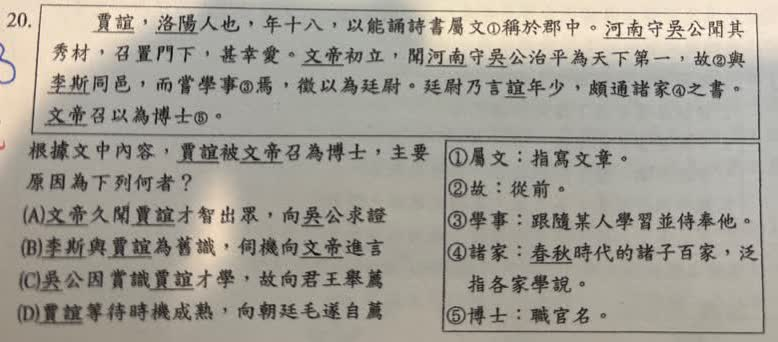

分享原卷｜第20題
完整原題
作答所需文章／材料
賈誼，洛陽人也，年十八，以能誦詩書屬文①稱於郡中。河南守吳公聞其秀材，召置門下，甚幸愛。文帝初立，聞河南守吳公治平為天下第一，故②與李斯同邑，而嘗學事③焉，徵以為廷尉。廷尉乃言誼年少，頗通諸家④之書。文帝召以為博士⑤。 【原卷註釋】 ①屬文：指寫文章。 ②故：從前。 ③學事：跟隨某人學習並侍奉他。 ④諸家：春秋時代的諸子百家，泛指各家學說。 ⑤博士：職官名。根據文中內容，賈誼被文帝召為博士，主要原因為下列何者？
(A) 文帝久聞賈誼才華出眾，向吳公求證
(B) 李斯與賈誼為舊識，伺機向文帝進言
(C) 吳公因賞識賈誼才學，故向君王舉薦
(D) 賈誼等待時機成熟，向朝廷毛遂自薦
先想一想，再查看答案、解說與原圖
原卷作答：B（原卷紅筆訂正C）
正確答案：C，吳公因賞識賈誼才學，故向君王舉薦。
逐項解析
| 選項與原句 | 判讀 | 句意與判斷理由 |
|---|---|---|
| (A) 文帝久聞賈誼才華出眾，向吳公求證 | 不選 | 文帝先聽聞的是吳公政績，沒有向吳公求證賈誼名聲的敘述。 |
| (B) 李斯與賈誼為舊識，伺機向文帝進言 | 不選 | 跟李斯有同鄉與學事關係的是吳公，並非李斯推薦賈誼。 |
| (C) 吳公因賞識賈誼才學，故向君王舉薦 | 應選 | 廷尉吳公向文帝介紹賈誼年少而通諸家之書，直接促成召任。 |
| (D) 賈誼等待時機成熟，向朝廷毛遂自薦 | 不選 | 原文由吳公舉薦，不是賈誼主動自薦。 |
詳細說明與解題步驟
【完整白話】
賈誼是洛陽人，十八歲時，就因善於誦讀詩書、寫作文章而在郡中出名。河南郡守吳公聽說他有出眾的才華，就把他招到門下，十分器重。
漢文帝剛即位，聽說吳公的治理政績是天下第一；吳公從前又與李斯同鄉，曾跟隨李斯學習侍奉，於是文帝徵召吳公擔任廷尉。
吳公擔任廷尉後，向文帝說賈誼雖年輕，卻很通曉各家學說的書。文帝便召賈誼來，任命為博士。
【把人物與推薦關係分清楚】
吳公先賞識賈誼，後升任廷尉，再向文帝推薦賈誼，最後文帝召任博士。C完整對應這條因果鏈。
與李斯同鄉、曾跟隨學習的是吳公，不是賈誼；文帝先聽聞治理有方的人也是吳公。A把聽聞與求證的對象弄錯，B把李斯安插成推薦者，D則改成賈誼自薦，都沒有原文依據。
屬文的屬讀ㄓㄨˇ，指寫作；幸愛在此是器重。博士依原註是古代官職，不是現代學位。
核對註記：已依原卷或完整文字核對並獨立解題；對應教材課次未確認，歸綜合。
原圖（僅本題）
